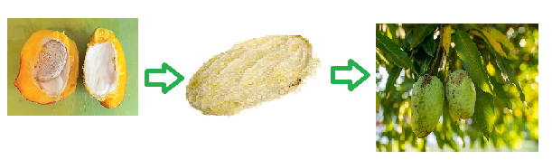

HOW TO GROW MANGO TREE FROM SEED

STEP 1: Obtain a Fresh Mango Seed
- Choose a ripe mango and extract the seed. Make sure the seed is fresh and not dried out.
- Remove the pulp and fibers from the seed, leaving only the hard, brown seed coat.
STEP 2: DRY THE SEED
- Let the seed dry for 1-2 days to prevent mold and fungal growth.
- This step is crucial to ensure the seed germinates properly.
STEP 3: PREPARE THE SEED HUSK
- Cut a small portion of the seed husk (about 1-2 cm) to create an opening.
- Gently pry open the husk to reveal the white seed inside.
- Remove any papery or fibrous material from the seed surface.
Step 4: Plant the Seed
- Fill a small container (like a yogurt cup or a seed starting tray) with a well-draining seed starting mix.
- Plant the seed about 1/2 inch deep, with the pointed end facing upwards.
- Water gently but thoroughly.
Step 5: Provide Optimal Conditions
- Place the container in a warm, bright location with indirect sunlight (avoid direct sunlight, which can cause overheating).
- a consistent temperature between 75°F to 85°F (24°C to 29°C).
- Water sparingly, as the seedling will require minimal moisture.
Step 6: Wait for Germination
- It may take 1-3 weeks for the seed to germinate. Be patient, as germination rates can vary.
- Once the seedling emerges, remove any remaining seed husk and trim the roots to encourage healthy growth.
Step 7: Transplant
- After 4-6 months, when the seedling has 2-3 sets of leaves and is about 6-8 inches tall, transplant it into a larger container (at least 12 inches deep) with a well-draining potting mix.
- Harden off the seedling by gradually exposing it to outdoor conditions over the course of 7-10 days before transplanting it into the ground.
Step 8: Plant in the Ground
- Choose a location with full sun and well-draining soil. Mango trees prefer slightly acidic to neutral soil pH (5.5-7.0).
- Dig a hole 3-4 times larger than the root ball, and gently place the seedling in the hole.
- Backfill with soil, and water thoroughly.
Step 9: Ongoing Care
- Water regularly, providing about 1 inch of water per week.
- Fertilize sparingly with a balanced, water-soluble fertilizer during the growing season (spring-fall).
- Prune the tree regularly to maintain a strong, open structure and encourage fruiting.
Important Note
- Mango trees grown from seed may not produce fruit true to the parent tree’s variety.
- Seed-grown mango trees can take 5-8 years or more to produce fruit, whereas grafted trees may produce fruit within 3-5 years.
- Mango trees are sensitive to frost, so protect them from frost damage if you live in an area with cold winters.
By following these steps, you should be able to successfully grow a mango tree from seed. Good luck!